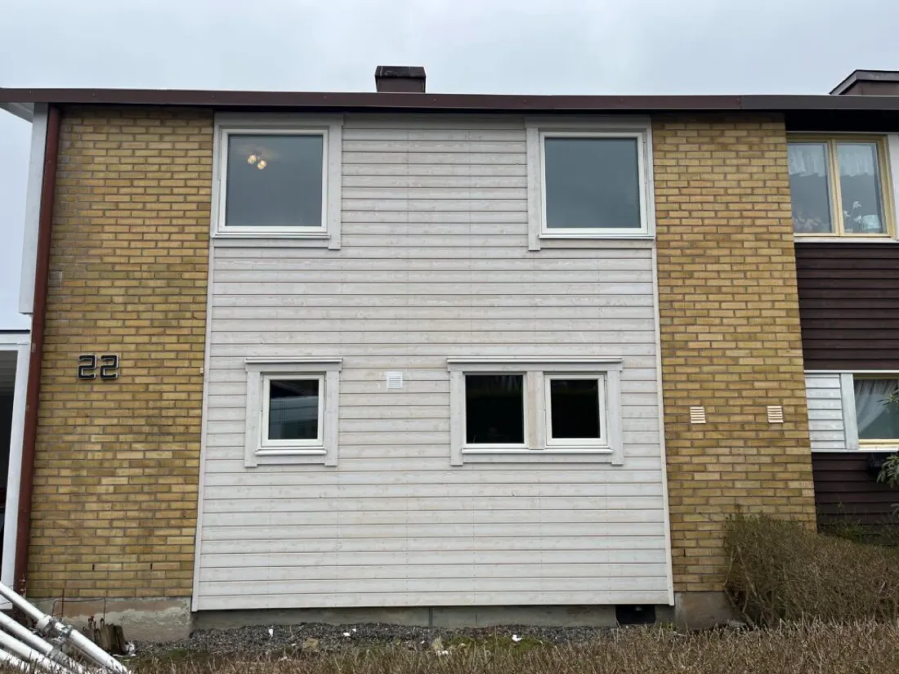

FÖRE / EFTER
FASAD
VÅRA TJÄNSTER / GÖTEBORG MED OMNEJD
Hjälp med fasadprojekt samt tak- och plåtarbeten genom företagets samarbeten.

Vi går igenom vad som behöver göras och vilka kompetenser uppdraget kräver. Bilder på huset och en beskrivning av behovet är en bra början.
Skicka gärna en kort beskrivning, plats, ungefärliga mått och när du vill få hjälp. Du kan också ringa oss direkt.
0763-200 200DITT NÄSTA PROJEKT BÖRJAR HÄR
En liten åtgärd eller ett större lyft.
Berätta, så börjar vi där.